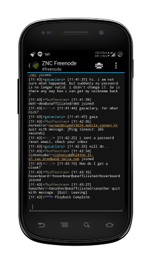

A fork for great good!
Help translate Atomic on Crowdin!
Project maintained by indrora Hosted on GitHub Pages — Theme by mattgrahamAtomic scratches an itch I (@indrora) had: A sexy IRC client that worked. After trying HoloIRC, AndChat, yaaic, and several others, yaaic came the closest and after pressure from friends, I decided to go ahead and fork yaaic.
Atomic can be found on IRC: We are #atomic-irc on Freenode
I wanted a working IRC client for Android. Unfortunately, at the time (early 2014) there was no good IRC clients that I really felt fit the strange requirements I had put in place:
When I tried out IRC clients on it, I constantly felt like I was fighting not only the hardware, but the ideas on which those IRC clients were founded. HoloIRC was by far beautiful, but fell short when the author didn't really care that his software didn't run terribly great on anything that wasn't at least a dual-core device with Jellybean or above on it. AndChat was focused as well on features, but not so much functionality. It was slow and bloated on my little 300MB-of-ram device. I frequently saw it run out of memory and go "oops!".
When I came across yaaic, I thought "Self, this looks like a good place to start. It has a nice interface (despite some not liking the new version), and it seems to have most of the features you want. Why not extend it?" So after much cadjoling by my peers, I forked the project, renamed it, and immediately went off and did something useful with my time. One of the first things I did was easy: Change up the icons and make things look good for what they are. I made sure it still ran on that dinky single-core phone and that it also ran right on other devices, like Nooks and Androidx86 targets.
{kind=link}